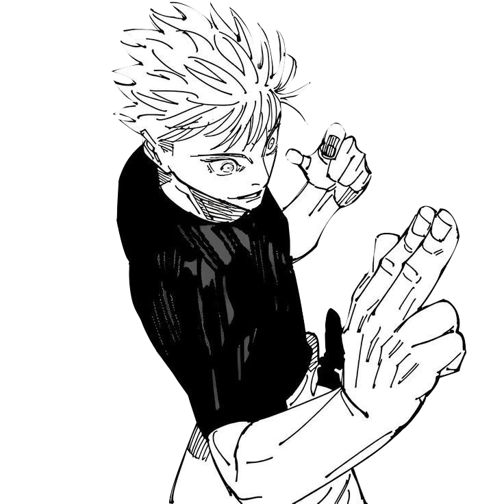

Satoru Gojo (Japanese: 五条 悟, Hepburn: Gojō Satoru), often known as The Honored One, is a fictional character from Gege Akutami's manga and anime series Jujutsu Kaisen. He was first introduced in Akutami's short series Tokyo Metropolitan Curse Technical School as the mentor of the cursed teenager Yuta Okkotsu, who suffers from Rika's curse. This miniseries became the prequel Jujutsu Kaisen 0 of Jujutsu Kaisen. In the main series of Jujutsu Kaisen, Gojo takes the same role but instead mentors student Yuji Itadori who suffers a curse of Sukuna, helping him become stronger while protecting other characters in the series.
